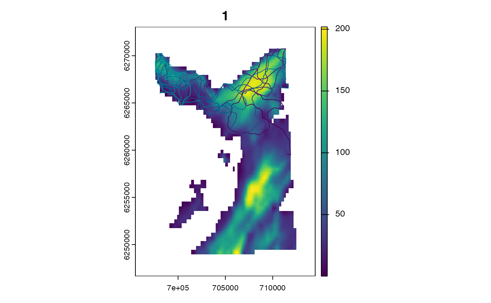
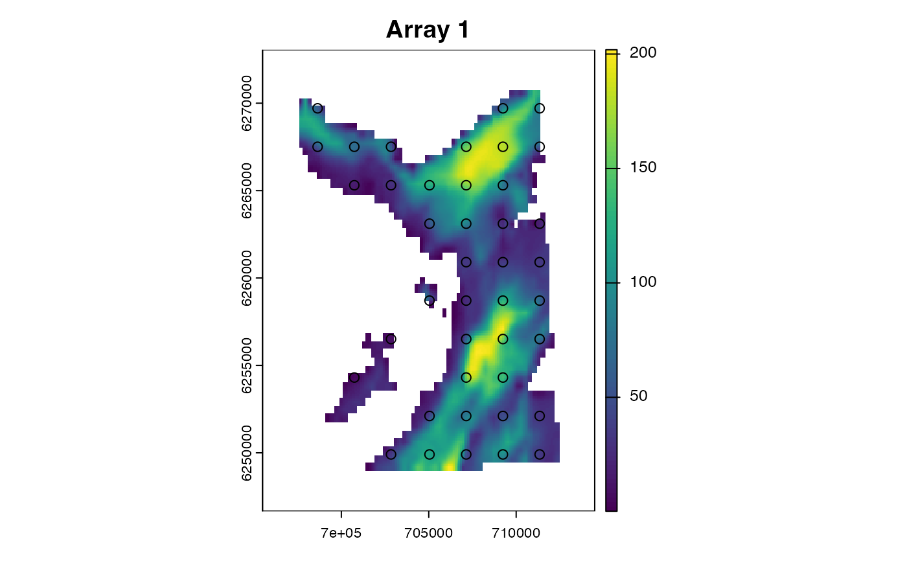
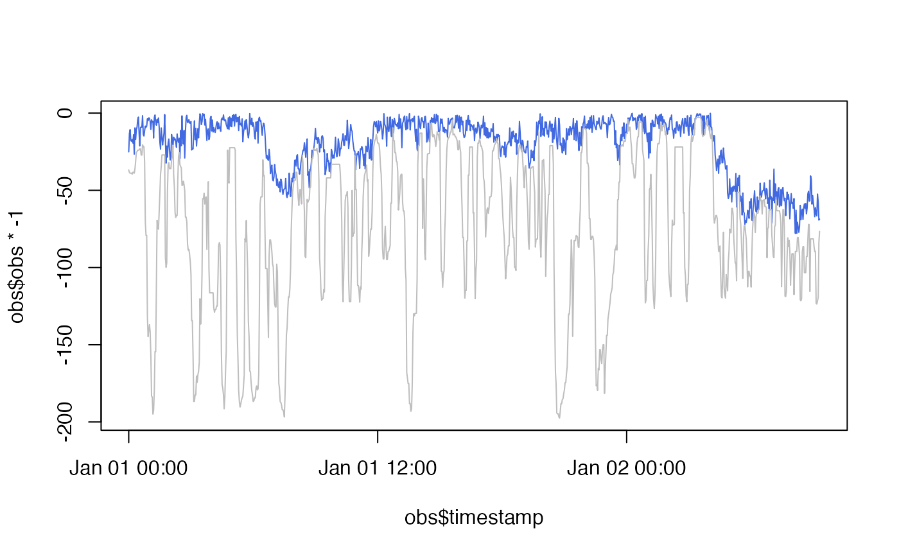

ModelObs is Abstract Type in Patter.jl that groups observation model sub-types. model_obs_*() R functions create data.tables of observation model parameters which can be visualised in R (via plot.ModelObs*() methods) and instantiated as ModelObs instances in Julia.
Usage
model_obs_acoustic_logis_trunc(.data, .strict = TRUE)
model_obs_depth_uniform_seabed(.data, .strict = TRUE)
model_obs_depth_normal_trunc_seabed(.data, .strict = TRUE)
model_obs_container(.data, .strict = TRUE)Arguments
- .data
A
data.tablethat contains observation model parameters.For
ModelObsAcousticLogisTrunc, required columns are:sensor_idreceiver_xandreceiver_yreceiver_alpha,receiver_betaandreceiver_gamma
For
ModelObsDepthUniformSeabed, required columns are:sensor_iddepth_shallow_epsdepth_deep_eps
For
ModelObsDepthNormalTruncSeabed, required columns are:sensor_iddepth_sigmadepth_deep_eps
For
ModelObsContainer, required columns are:sensor_idcontainer_xandcontainer_yradius
See
Patter.jlorJuliaCall::julia_help("ModelObs")for details.- .strict
A
logicalvariable that defines whether or not to only retain columns in.datadefined in the correspondingModelObsstructure.Set
.strict = TRUE(default) insim_observations();Set
.strict = FALSEinpf_filter()to include time stamps and observations in thedata.table;
Value
model_obs_*() R wrapper functions return a named list, with a single element that defines the parameters of the observation models for the corresponding ModelObs structure.
Model structures
Observation model sub-types are Julia structures that hold the parameters of observation models. From an R-user perspective, you can think of a ModelObs sub-type as an S4-class-like object, with slots for the parameters of an observation model. With an observation model structure, we can simulate new observations and evaluate the log-probability of existing observations.
The following observation models are built in to Patter.jl:
ModelObsAcousticLogisTruncModelObsDepthUniformSeabedModelObsDepthNormalTruncSeabedModelObsContainer
In patter, observation models are required:
To simulate new observational datasets, via
sim_observations();To run the particle filter, via
pf_filter();
Observation model sub-types and parameters should be specified as a named list of data.tables. To assemble a data.table of parameters for a given ModelObs structure, see assemble functions. A named list can be created manually from individual data.tables or via model_obs_*() R functions. The R functions simply check the inputs and wrap inputted data.tables of ModelObs* parameters in a named list. A S3-ModelObs* label is added and enables supporting methods (e.g., plot.ModelObs()) to be implemented for observation models.
Internally in patter algorithms, observation model sub-types and parameters are instantiated and used to simulate observations or in the particle filter. The simulation of observations is implemented via Patter.simulate_obs(). In the particle filter, log-probabilities are evaluated by Patter.logpdf_obs(). These are generic functions. Different methods are dispatched according to the input model. For the built-in ModelObs sub-types, corresponding methods for these routines are also built-in. For custom ModelObs sub-types, the methods need to be provided.
To use custom ModelObs sub-types, see Examples.
Model development
Observation models should be formulated, and parameterised, using available datasets, domain knowledge and literature. The appropriate model formulation/parameterisation depends on the data type and the study system. As noted above, patter provides built-in structures for acoustic and depth observations; user-defined structures for custom data types are also supported.
To parameterise acoustic observation models, consider in-situ detection efficiency measurements (from drift tests and/or sentinel tags), manufacture guidelines and literature. Detection probability parameters can be estimated from in-situ measurements using generalised linear models. To estimate parameters for the default distance-decaying logistic detection probability model (ModelObsAcousticLogisTrunc):
Assemble a
data.frameof detections and non-detections and a column of distances from receivers;Model
glm(detection ~ distance, family = "binomial");Take the estimated intercept and gradient as initial values for
receiver_alphaandreceiver_beta, respectively;Set the maximum detection range (
receiver_gamma) based on range tests, manufacturer specifications, domain knowledge and literature (e.g., Klinard et al. (2019)). Note thatreceiver_gammadefines the distance beyond which detections are assumed impossible. Since this parameter affects the tail of the distribution, the exact value can be relatively unimportant, providing it is large enough. We recommend erring on the side of flexibility in cases of uncertainty. Note that manufacturer guidelines may considerably underestimate maximum detection ranges (see Klinard et al. (2019) for an example).
To parameterise depth observation models, you should consider:
Tag accuracy
Bathymetric accuracy
Tidal variation and storm surges
Species biology (e.g., benthic versus pelagic species)
Note that model formulation and parameterisation can be an iterative process:
Develop initial model and observation models, drawing on available datasets, domain knowledge and literature;
Perform inference, using
pf_filter();Evaluate convergence;
In cases of convergence failures, re-evaluate the model(s) and try again;
Where necessary, run the algorithms with more restrictive or flexible models to analyse sensitivity;
For an example case-study analysis, see Lavender et al. (2025).
For further information, see GitHub issues 23, 31 and 33 or raise a new issue.
See also
The routines in patter for the simulation of individual movements, observations and statistical modelling are built upon three Abstract Types defined in Julia:
Examples
if (patter_run(.julia = TRUE, .geospatial = TRUE)) {
library(JuliaCall)
library(data.table)
library(dtplyr)
library(dplyr, warn.conflicts = FALSE)
#### Julia set up
# Connect to Julia
julia <- julia_connect()
# Set seed
set_seed()
#### Set map in Julia
map <- dat_gebco()
set_map(map)
#### Simulate path(s)
# > We simulate a path in four dimensions (see `?StateCXYZ`)
timeline <- seq(as.POSIXct("2016-01-01 00:00:00", tz = "UTC"),
as.POSIXct("2016-01-02 09:18:00", tz = "UTC"),
by = "2 mins")
paths <- sim_path_walk(.map = map,
.timeline = timeline,
.state = "StateCXYZ",
.xinit = NULL,
.n_path = 1L,
.model_move = model_move_cxyz())
#### --------------------------------------------------
#### In-built ModelObs types
#### Example (1): ModelObsAcousticLogisTrunc
# ModelObsAcousticLogisTrunc is an in-built ModelObs structure
# This holds the parameters of a
# ... truncated logistic acoustic observation model
# To evaluate the probability of an acoustic observation,
# ... under this model, we need to know receiver positions
# ... and the coefficients in the logistic equation.
# We can then simulate observations or run the particle filter.
# Simulate an acoustic array
array <- sim_array(.map = map,
.timeline = timeline,
.n_receiver = 100L,
.arrangement = "regular",
# Define logistic equation coefficients
.receiver_alpha = 4,
.receiver_beta = -0.01,
.receiver_gamma = 750)
# This is a data.table of our acoustic observation model parameters
array
# The model_obs_*() function simply returns these in a list
# ... with a `ModelObsAcousticLogisTrunc` S3-class label
model_obs_acoustic_logis_trunc(array)
# We can plot observation model structures via corresponding `plot` methods
# See `?plot.ModelObs`
model_obs <- model_obs_acoustic_logis_trunc(array)
plot(model_obs)
# Simulate observations with a named list of observation model parameters
obs <- sim_observations(.timeline = timeline,
.model_obs = model_obs)
# In long-form, the code above can be expressed as follows
sim_observations(
.timeline = timeline,
.model_obs =
list(
ModelObsAcousticLogisTrunc =
array |>
select(sensor_id = "receiver_id",
"receiver_x", "receiver_y",
"receiver_alpha", "receiver_beta", "receiver_gamma") |>
as.data.table()))
# In real-world scenarios, we must assemble a [`data.table::data.table`] of acoustic observations
# (For convenience, here we simply use our simulated observations)
acc <- assemble_acoustics(
.timeline = timeline,
.detections = obs$ModelObsAcousticLogisTrunc[[1]][obs == 1L, ],
.moorings = array
)
# The particle filter expects observations & parameters to be supplied as a named list
fwd <- pf_filter(.timeline = timeline,
.state = "StateCXYZ",
.model_move = model_move_cxyz(),
.yobs = model_obs_acoustic_logis_trunc(acc, .strict = FALSE),
.n_particle = 1000L)
# This implementation is identical
fwd <- pf_filter(.timeline = timeline,
.state = "StateCXYZ",
.model_move = model_move_cxyz(),
.yobs = list(ModelObsAcousticLogisTrunc = acc),
.n_particle = 1000L)
# But with the model_obs_*() implementation we benefit from in-built `plot()` methods
plot(model_obs_acoustic_logis_trunc(acc))
# See `?ModelObs` for other in-built `ModelObs` structures
#### --------------------------------------------------
#### Custom ModelObs types
# Patter contains multiple built-in `ModelObs` sub-types that you can use
# ... (with custom parameters) simulate observations and for particle filtering.
# To use a new sub-type, follow the workflow below. Some extra work is required
# ... because we have to register the sub-type in `Julia` and write the
# ... required methods to simulate observations and/or calculate log probabilities.
#### Simulate observations arising from the simulated path
# Register a custom `ModelObs` sub-type in Julia
# * We imagine a pelagic animal in which the depth at each time step
# * ... is normally distributed around the previous depth.
# * We write a `ModelObs` sub-type in `Julia` that contains the parameters
# * ... for this model (i.e., the sigma parameter of the normal distribution).
julia_command(
'
struct ModelObsDepthNormal <: Patter.ModelObs
sensor_id::Int64
depth_sigma::Float64
end
'
)
# Define a `Patter.simulate_obs()` method
# * We need to specify a function that simulates depths for `ModelObsDepthNormal`
# * We simulate depths around the previous depth (`state.z`), truncated between
# * ... the depth of the seabed (`state.map_value`) and the surface.
julia_command(
'
function Patter.simulate_obs(state::StateCXYZ, model::ModelObsDepthNormal, t::Int64)
dbn = truncated(Normal(state.z, model.depth_sigma), 0, state.map_value)
rand(dbn)
end
'
)
# Simulate observations
model_obs <-
list("ModelObsDepthNormal" = data.table(sensor_id = 1L, depth_sigma = 5))
obs <- sim_observations(.timeline = timeline, .model_obs = model_obs)
obs <- obs$ModelObsDepthNormal[[1]]
yobs <- list(ModelObsDepthNormal = obs)
# Plot simulated depth trajectory
# * Blue: simulated time series
# * Grey: seabed depth for simulated time series
ylim <- range(c(obs$obs, paths$map_value) * -1)
plot(obs$timestamp, obs$obs * -1, ylim = ylim, col = "royalblue", type = "l")
lines(paths$timestamp, paths$map_value * -1, col = "grey")
#### Run the forward filter
# (optional) Define initial states, by:
# A) Starting the filter in the correct location by masking `.map`
# B) Specifying a `map_init()` method based on the observation model
# C) Specifying a complete data.table of initial state(s)
origin <- terra::setValues(map, NA)
cell <- terra::cellFromXY(map, cbind(paths$x[1], paths$y[1]))
origin[cell] <- paths$map_value[1]
set_map(origin, .as_Raster = TRUE, .as_GeoArray = FALSE)
# Define a `Patter.logpdf_obs()` method
# * This is used to evaluate the log probability of a depth observation
julia_command(
'
function Patter.logpdf_obs(state::State, model::ModelObsDepthNormal, t::Int64, obs::Float64)
dbn = truncated(Normal(state.map_value, model.depth_sigma),
0.0, state.map_value)
logpdf(dbn, obs)
end
'
)
# Run the filter
fwd <- pf_filter(.timeline = timeline,
.state = "StateCXYZ",
.yobs = yobs,
.model_move = model_move_cxyz(),
.n_particle = 1000L)
# Visualise reconstructed time series
# * Black: particle depths
# * Blue: simulated time series
# * Grey: seabed depth for simulated time series
ylim <- range(c(fwd$states$z, obs$obs, paths$map_value) * -1)
plot(fwd$states$timestamp, fwd$states$z * -1, ylim = ylim, pch = ".")
lines(obs$timestamp, obs$obs * -1 , col = "royalblue")
lines(paths$timestamp, paths$map_value * -1, col = "grey")
}
#> `Julia` already connected. Set `.socket = TRUE` to reconnect.


#> `patter::pf_filter()` called @ 2025-04-04 10:31:27...
#> `patter::pf_filter_init()` called @ 2025-04-04 10:31:27...
#> ... 10:31:27: Setting initial states...
#> ... 10:31:27: Setting observations dictionary...
#> `patter::pf_filter_init()` call ended @ 2025-04-04 10:31:27 (duration: ~0 sec(s)).
#> ... 10:31:27: Running filter...
#> Message: On iteration 1 ...
#>
#> Message: Running filter for batch 1 / 1 ...
#>
#> ... 10:31:27: Collating outputs...
#> `patter::pf_filter()` call ended @ 2025-04-04 10:31:27 (duration: ~0 sec(s)).
#> `patter::pf_filter()` called @ 2025-04-04 10:31:27...
#> `patter::pf_filter_init()` called @ 2025-04-04 10:31:27...
#> ... 10:31:27: Setting initial states...
#> ... 10:31:27: Setting observations dictionary...
#> `patter::pf_filter_init()` call ended @ 2025-04-04 10:31:27 (duration: ~0 sec(s)).
#> ... 10:31:27: Running filter...
#> Message: On iteration 1 ...
#>
#> Message: Running filter for batch 1 / 1 ...
#>
#>
#> Warning: Weights from filter (1 -> 1000) are zero at time 111: returning outputs from 1:111. Note that all (log) weights at 111 are -Inf.
#>
#> Warning: The particle filter failed to converge.
#> ... 10:31:27: Collating outputs...
#> `patter::pf_filter()` call ended @ 2025-04-04 10:31:27 (duration: ~0 sec(s)).

#> `patter::pf_filter()` called @ 2025-04-04 10:31:27...
#> `patter::pf_filter_init()` called @ 2025-04-04 10:31:27...
#> ... 10:31:27: Setting initial states...
#> ... 10:31:27: Setting observations dictionary...
#> `patter::pf_filter_init()` call ended @ 2025-04-04 10:31:27 (duration: ~0 sec(s)).
#> ... 10:31:27: Running filter...
#> Message: On iteration 1 ...
#>
#> Message: Running filter for batch 1 / 1 ...
#>
#> ... 10:31:28: Collating outputs...
#> `patter::pf_filter()` call ended @ 2025-04-04 10:31:28 (duration: ~1 sec(s)).